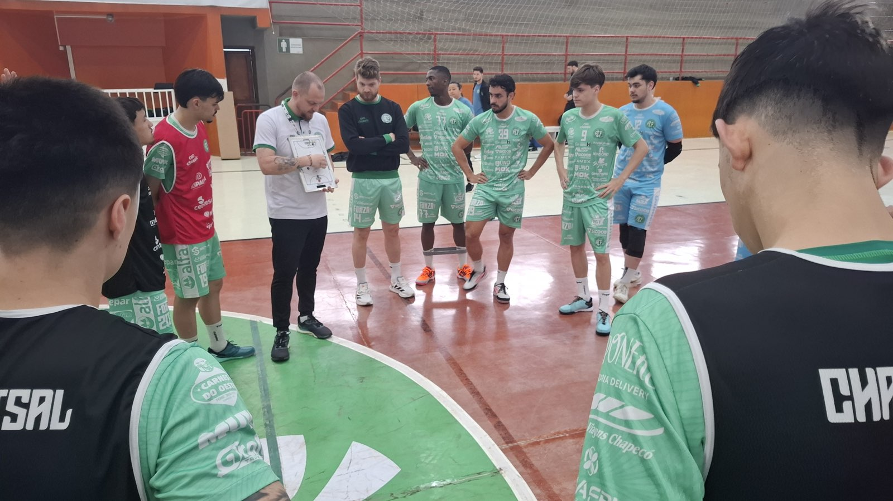

A Prefeitura de Chapecó/Chapecoense/Unochapecó entra em quadra nesta quarta-feira (30), às 19h30, no Ginásio Plínio De Nes (SER Aurora), para decidir uma vaga à semifinal da Copa SC de Futsal contra o Rio do Sul. Mais do que um confronto decisivo de quartas de final, a partida coroa um mês de superação física e mental para o Verdão das Quadras, que chega à marca impressionante de 16 jogos apenas em setembro.
A maratona severa exigiu o limite do grupo de atletas, que se dividiu entre as disputas do Campeonato Brasileiro, a Série Ouro do Catarinense, a fase regional dos JASC, Copa SC e a Copa Sul, torneio em que superou o desgaste para se sagrar vice-campeão. Agora, diante do torcedor, a Chape joga pela vantagem: após vencer na ida por 3 a 1, o time avança com um empate. O Rio do Sul precisa, obrigatoriamente, da vitória para forçar a prorrogação, onde uma nova igualdade leva a decisão para os pênaltis.

Ingresso casado
Para contar com o apoio das arquibancadas, a diretoria lançou uma promoção de "ingresso casado" válida para o jogo desta quarta e também para o compromisso de sábado (3), às 18h30, contra o Magé (RJ), no SESC, pela penúltima rodada da primeira fase do Brasileiro. O combo para as duas partidas custa R$ 30 (inteiro) e R$ 15 (meia), disponível nos sites chapecoensefutsal.com.br e ingressojogo.com.br, além das lojas Oficial da Chape Futsal (anexa à Classic Uniformes) e iXap Sports, e na hora.
Sócio não paga
Haverá venda de ingressos avulsos por R$ 20 (inteiro) e R$ 10 (meia). Crianças até 12 anos têm acesso gratuito, mediante apresentação de documento e acompanhadas por responsáveis. Sócios da Chape Futsal com carteirinha entram sem precisar adquirir o ticket.
Fotos: Chape Futsal